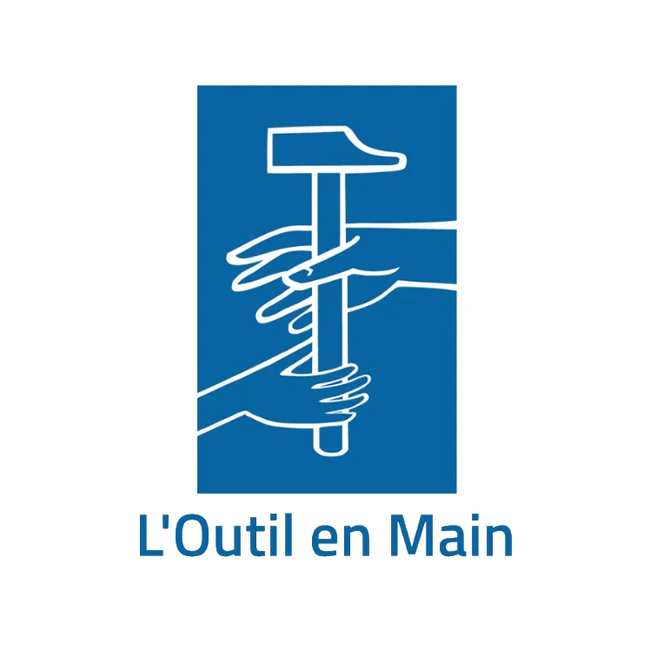

Nom : Dorneanu Denis-Daniel
Classe : dixième année
Projet : Présentation de l'association "L’Outil en Main"
Logo officiel de l’association
Contact
Adresse: 63 rue Charles Auray
93500 Pantin
Numéro de téléphone: 01 49 91 04 78
E-mail: secretariat@loutilenmain.fr